Eight independent CV sources running alongside the tracks — LFOs, envelopes, random walks, chaos, and a struck-spring resonator — plus two bank-wide modes (JustF rate-link and the Geode rhythmic engine).
The Modulator bank is a set of 8 independent CV sources that run alongside the tracks. Each slot generates a continuous control signal — an LFO, an envelope, a random walk, a chaotic attractor, or a struck-spring resonator — and routes it to CV outputs, the internal modulation bus, or MIDI. The bank is not a track: it has no steps and no pattern. It is a panel of motion you assign wherever you need it.
On top of the per-slot shapes sit two bank-wide modes that retune the whole set at once: JustF (a Just Friends / ochd-style rate link, M1 master + harmonic spread) and Geode (a 6-voice Just-Friends rhythmic engine). They are mutually exclusive and toggle from the same page.
Everything here is grounded in the firmware as built — defaults, ranges, enum members, key bindings, and label strings come from the model (Modulator.h, GeodeConfig.h), the engine (ModulatorEngine.h, GeodeEngine.h), and the UI (ModulatorPage.cpp).
The bank holds 8 modulator slots (M1..M8, CONFIG_MODULATOR_COUNT = 8). Each slot is one Modulator: a shape plus its parameters, evaluated every engine tick by ModulatorEngine into a single output in 0..127 (64 = 0V at the CV stage). That value is then routed.
A slot is always running — there are no steps to advance. What moves the output is the shape's own motion and the slot's gate behavior (free-run vs triggered/held).
Three things define a slot:
| # | Enum | Label | Family |
|---|---|---|---|
| 0 | Sine | Sine | LFO |
| 1 | Triangle | Triangle | LFO |
| 2 | SawUp | Saw Up | LFO |
| 3 | SawDown | Saw Down | LFO |
| 4 | Square | Square | LFO |
| 5 | Random | Random | sample-and-hold |
| 6 | ADSR | ADSR | envelope |
| 7 | ChaosLorenz | Lorenz | chaos |
| 8 | ChaosLatoocarfian | Latoocarfian | chaos |
| 9 | Spring | Spring | physical resonator |
The shape is changed by focusing SHAPE (F1) and turning the encoder.
A bipolar waveform scaled by depth and shifted by offset, with a phase control.
| Param | Field | Default | Range | Effect |
|---|---|---|---|---|
| RATE | _rate | 0.05 Hz (Free) | Free 0.01–16 Hz; Tempo 1/64..16 bars | Speed; domain-keyed |
| DEPTH | _depth | 25 | 0–127 | Amplitude (127 = full swing) |
| PHASE | _phase | 0° | 0–359° | Phase offset |
| OFFSET | _offset | 0 | −64..+63 | Baseline shift; sets rest level via floorValue() |
A sample-and-hold of a random value, slewed between samples. MODE decides when it samples (FREE = clocked, TRIG = on gate rising, HOLD = track-and-hold while gate high).
| Param | Field | Default | Range | Effect |
|---|---|---|---|---|
| RATE | _rate | 0.05 Hz | Free/Tempo | Sample clock |
| DEPTH | _depth | 25 | 0–127 | Amplitude |
| SLEW | _smooth | 100 ms | 0–5000 ms | Glide between samples |
| OFFSET | _offset | 0 | −64..+63 | Baseline shift |
A gated attack/decay/sustain/release envelope. Unipolar: rests at the floor, rises toward the amplitude ceiling. Two pages.
Page 1 — SHAPE / ATTACK / DECAY / SUSTAIN / RELEASE:
| Param | Field | Default | Range | Effect |
|---|---|---|---|---|
| ATTACK | _attack | 100 ms | 0–2000 ms | Idle → peak |
| DECAY | _decay | 100 ms | 0–2000 ms | Peak → sustain |
| SUSTAIN | _sustain | 100 | 0–127 | Held level |
| RELEASE | _release | 200 ms | 0–2000 ms | Sustain → idle after gate falls |
Page 2 — DEPTH (F3) / INVERT (F4) / OFFSET (F5):
| Param | Field | Default | Range | Effect |
|---|---|---|---|---|
| DEPTH (amplitude) | _amplitude | 127 | 0–127 | Envelope peak |
| INVERT | _invert | OFF | on/off | Ducks from the top instead of rising |
| OFFSET (rest V) | _offset | 0 | −64..+63 | Rest voltage; shown as volts |
State machine: Idle → Attack → Decay → Sustain → Release → Idle, driven by the gate source; output mapped through unipolarOutput(env, amplitude, floor, invert).
A chaotic attractor sampled into CV. Two pages.
| Param (p1) | Field | Range | Effect |
|---|---|---|---|
| RATE | _rate | Free/Tempo | Integration / step rate |
| DEPTH | _depth | 0–127 | Amplitude |
| P1 | _attack (reused) | 0–2000 → 0..1 | Lorenz ρ 10..50 / Latoocarfian a,b 0.5..3.0 |
| P2 | _decay (reused) | 0–2000 → 0..1 | Lorenz β 0.5..4.0 / Latoocarfian c,d 0.5..3.0 |
Page 2: SLEW (_smooth, 0–5000 ms) on F1 and OFFSET on F5. P1/P2 reuse the ADSR attack/decay storage, curve-mapped to the attractor constants.
A 3-mode inharmonic resonator (a struck "spring"). Two pages. Spring relabels the reused fields.
| Label (p1) | Reused field | Effect |
|---|---|---|
| STRIKE | _rate | Strike (hit) clock |
| TENS | _attack | Tension → resonant frequency ω₀ (0.3 × 40^(attack/2000) Hz) |
| RING | _decay | Ring-out → damping ζ (0.0015 × 800^(1 − decay/2000)) |
| CLANG | _smooth | Clang → pickup amplitude weighting (smooth / 5000) |
Page 2: PICKUP (_phase 0–4: Position / Velocity / Kinetic / Potential / Total), DEPTH (strike force 0.7 × depth/127), OFFSET. Frequency ratios [1.0, 2.76, 5.40], semi-implicit integration, tanh soft-saturation. See docs/spring-modulator-spec.md.
These four are shape-orthogonal — they apply across families.
Rate is domain-keyed. Re-pressing RATE when it is focused cycles the domain (on shapes that show RATE on F2).
| Mode | Label | Behavior |
|---|---|---|
| Run | FREE | Free-running; gate ignored |
| Trig | TRIG | Reset phase to offset on gate rising (offset 0 = hard sync) |
| Gate | HOLD | Advance only while gate high; reset on rising |
For Random, FREE/TRIG/HOLD select clocked S&H / gate-triggered S&H / track-and-hold.
floorValue() = clamp(64 + offset, 0, 127).JustF turns the bank into an ochd / Just Friends rate cluster: one master rate (M1) with the rest spread harmonically. It is not a shape — it is a runtime engine mode (_justfActive, _intone).
For ADSR followers, attack/decay/release spread by the same ratio per index; sustain is copied from M1; amplitude stays per-slot.
%+.2f) with a tiny derived-Hz readout beneath it; on M3..M8 the rate cell shows the read-only derived rate. Leaving the page bakes JustF: the derived rates (and ADSR times) are written into each follower, then JustF turns off. Tempo-domain slots are untouched.Geode reskins the bank into a Just-Friends-style rhythmic / stochastic clock engine (GeodeConfig + GeodeEngine). Separate subsystem, mutually exclusive with JustF. Shift+SHAPE toggles it; turning it on parks M2's depth to 0 so the run signal starts neutral.
VoiceCount = 6).Stored 0..16383; intone and curve are bipolar (8192 = centre).
| Label | Field | Default | Range | Effect |
|---|---|---|---|---|
| TIME | _time | 8192 | 0–16383 | Envelope base time, log-mapped, capped (≈ up to 4 s; MaxTimeNorm = 0.55) |
| INTONE | _intone | 8192 (centre) | 0–16383 → −1..+1 | Voice time spread |
| RAMP | _ramp | 8192 | 0–16383 → 0..1 | Attack/decay balance |
| CURVE | _curve | 8192 (centre) | STEP/LOG/LIN/EXP | Envelope shape |
| MODE | _mode | 0 | 0–2 | TRANS / SUST / CYCLE |
| Label | Field | Default | Range | Effect |
|---|---|---|---|---|
| DIVS | _divs[v] | 1 | 1–64 | Clock divisor |
| REPEAT | _repeats[v] | 0 | −1..255 | Burst count; −1 = INF |
| TUNE | _tuneNum:_tuneDen | (v+1):1 | num/den | INTONE-ratio override (dormant — see note) |
| TIME | derived | — | — | The voice's gesture time in ms (read-out) |
The header reads MOD n - MODULATOR (or ROUTING / GEODE). Track buttons T1..T8 select the slot. The layout is a left rolling scope and a right param list.
-> CV1,CV3) when assigned.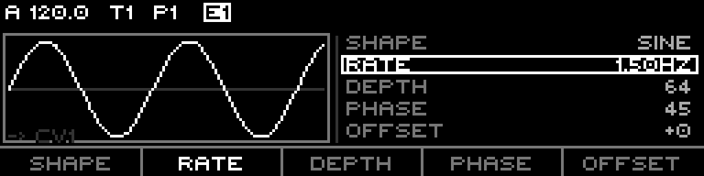
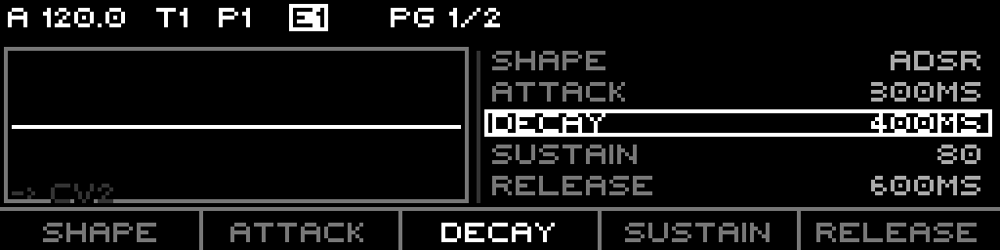
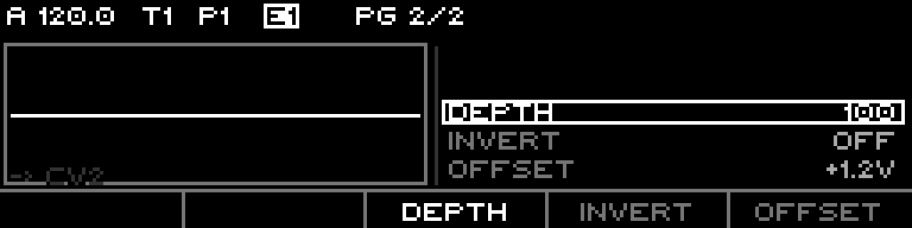
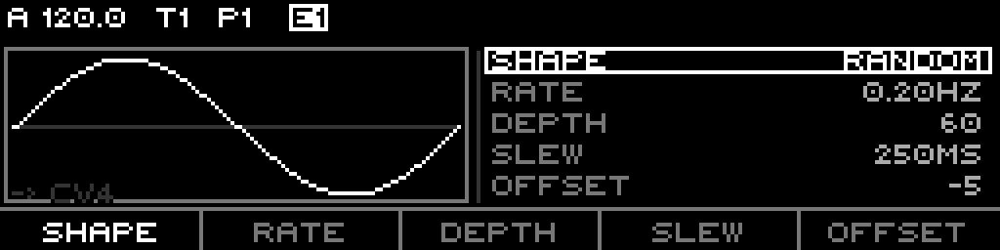
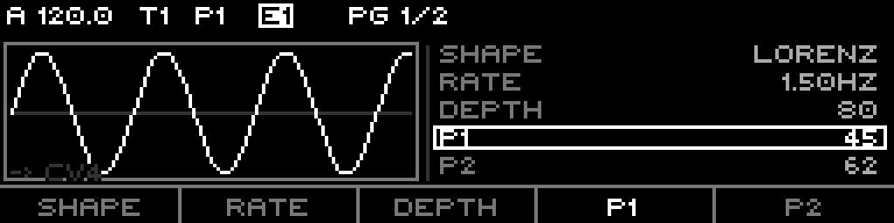
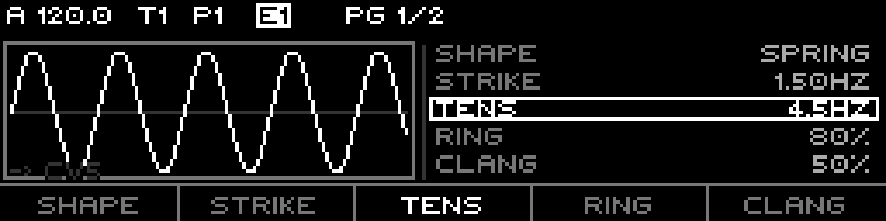
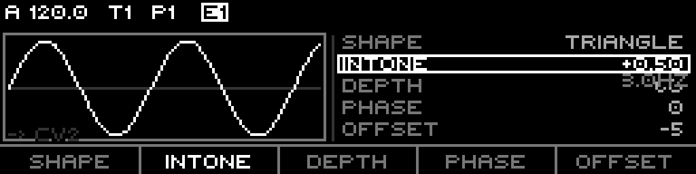
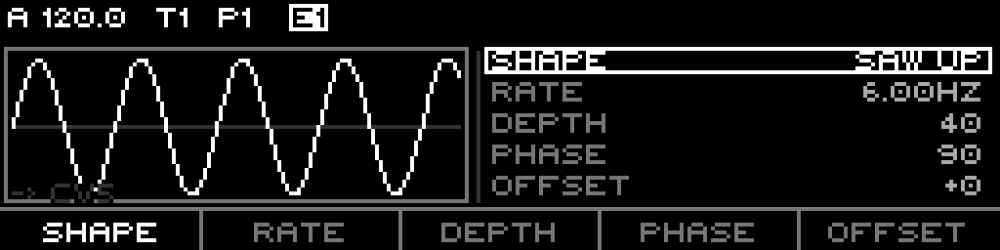
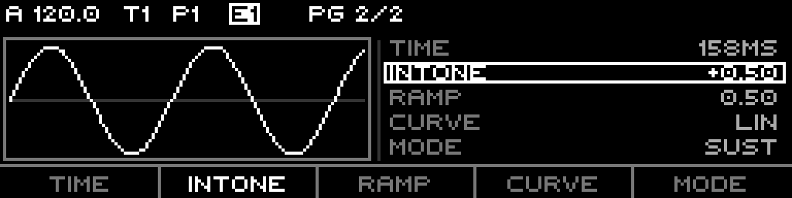
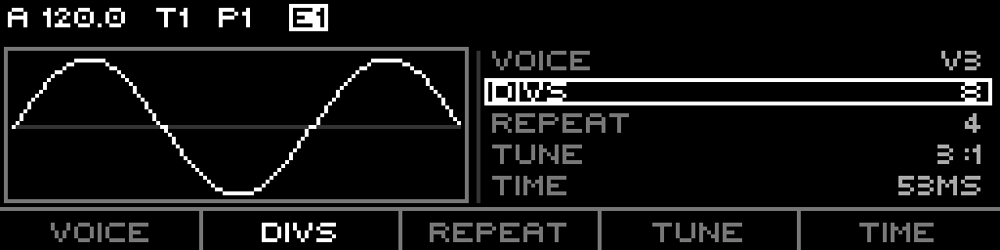
Press Right from the last param page to open the routing overlay (header reads ROUTING). The overlay is a membership grid — a modulator can drive multiple destinations at once.
| F-key | Does |
|---|---|
| F1 RUN | Focus the modulator run mode (One / Loop / Cycle); encoder edits |
| F2 GATE | Focus the gate source; encoder cycles the curated source list |
| F3 CLEAR | Remove the cursored destination |
| F4 EVENT | For a MIDI destination, cycle the continuous event (CC / Bend / Pressure) |
| F5 CC NUM | For a CC event, edit the CC number (0–127) |
Routing edits are staged; the context menu (Shift+Page) offers CANCEL (revert) and COMMIT (apply CV / MIDI assignments).
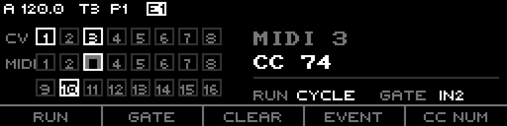
Beyond CV and MIDI, a modulator routes into Routing::Target — the routing engine's full target set: tempo, swing, mute/fill, per-track octave / transpose / probability biases, per-sequence first/last/divisor/scale, Tuesday / Stochastic / Fractal targets, the chaos and wavefolder effects, DiscreteMap, indexed modulation, and the BusCv 1–4 sinks.
The bank is fully scriptable from Teletype 2. Modulator slots are addressed 1-based (1..8); Geode is single-instance. Ops live in TeletypeNativeOps.cpp; names in TT2OpNames.cpp.
| Op | Args | Does | Alias |
|---|---|---|---|
MO | slot | read the slot's current output | — |
MO.P | slot, addr, [val] | get/set any param by address (incl. gate source, addr 14) | — |
MO.SHAPE | slot, [val] | get/set Shape | MO.S |
MO.RATE | slot, [val] | get/set Rate | MO.R |
MO.DEPTH | slot, [val] | get/set Depth | MO.D |
MO.MODE | slot, [val] | get/set Mode (FREE/TRIG/HOLD) | MO.M |
MO.OFF | slot, [val] | get/set Offset | MO.O |
MO.TRIG | slot | trigger the slot (fire its envelope / gate) | MO.T |
The MO.P addresses are the Modulator::Param table: Shape(0), Rate(1), Depth(2), Mode(3), Offset(4), Attack(5), Decay(6), Sustain(7), Release(8), Amplitude(9), Smooth(10), Phase(11), Invert(12), RateDomain(13), GateSource(14).
E (slot, amplitude), E.A, E.D, E.O, E.T (trigger). LFO.* force Sine + Run: LFO.R (centi-Hz, Free), LFO.C (divisor → Tempo), LFO.A (depth), LFO.O (offset). LFO.W / LFO.F / LFO.S are reserved, not yet wired.| Op | Args | Does | Alias |
|---|---|---|---|
G.TIME | [ms] | get/set TIME | G.T |
G.TONE | [intone] | get/set INTONE | G.I |
G.RAMP | [ramp] | get/set RAMP | G.RA |
G.CURV | [curve] | get/set CURVE | G.C |
G.MODE | [mode] | get/set MODE (0=Trans/1=Sust/2=Cycle) | G.M |
G.RUN | [state] | get/set run state (0 = stop) | G.N |
G.VAL | — | read the live mix output | G.L |
G.TUNE | voice, num, den | set a voice's tune ratio (voice 0 = all) | — |
G.V | voice, divs, reps | trigger voice(s) (voice 0 = all) | — |
G.S | time, intone, run | atomic TIME/TONE/RUN setter (no trigger) | — |
G.O, G.BAR, G.R are intentionally unregistered — no live GeodeConfig field; run goes through MO 2, bars through the transport.
MO.RATE / MO.DEPTH / MO.OFF / MO.MODE / MO.SHAPE set the same per-slot fields the F-keys edit; MO.TRIG is the script form of the SHAPE re-press audition.MO.P slot 14 … writes the gate source as a raw Routing::Source ordinal — unvalidated, no UI curation.G.TIME / G.TONE / G.RAMP / G.CURV / G.MODE are the five Geode globals (M1 page 2). G.TUNE writes a voice's tune ratio, G.V triggers the DIVS/REPEAT burst, and G.RUN / G.VAL drive and read the engine.Per-slot params (the 15-field dictionary): Shape, Rate, Depth, Mode, Offset, Attack, Decay, Sustain, Release, Amplitude, Smooth, Phase, Invert, RateDomain, GateSource. Shapes reinterpret the labels (Spring → STRIKE/TENS/RING/CLANG/PICKUP; Chaos → P1/P2).
Defaults at clear(): Shape Sine, Rate 0.05 Hz (Free), Depth 25, Mode FREE, Offset 0, Attack 900 / Decay 1240, Sustain 100, Release 200, Amplitude 127, Smooth 100, Phase 0, Invert off, gate source GateOut1.
| Bank mode | Toggle | M1 | M2 | M3..M8 |
|---|---|---|---|---|
| JustF | Shift+RATE | master rate | INTONE host | derived rates (read-only) |
| Geode | Shift+SHAPE | clock + globals | run source | 6 voices |
Each slot → 0..127 (64 = 0V) → routed to CV outputs / bus CV / MIDI via the routing overlay, or driven from Teletype MO.* / G.*.